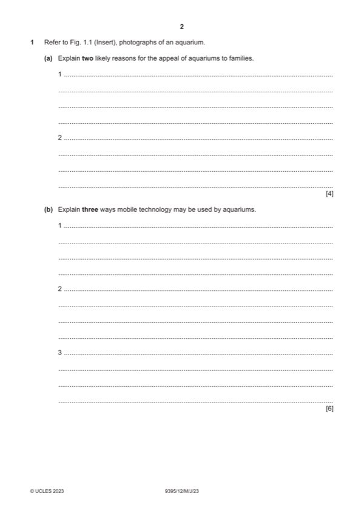

Question 1

Original paper page 2
Part 1(a) — solution
- Plenty of exhibits (1) provides something for everyone (1)
- Viewing platforms are at heights (1) allowing everyone to be able to see
- Some exhibits are hands-on (1) which is interesting and educational for
- Ease of movement (1) wide aisles allow plenty of room for any buggies
Mark points
- Plenty of exhibits (1) provides something for everyone (1)
- Viewing platforms are at heights (1) allowing everyone to be able to see
- Some exhibits are hands-on (1) which is interesting and educational for
- Ease of movement (1) wide aisles allow plenty of room for any buggies
Part 1(b) — solution
- Bookings (1) can be made easily by customers whenever they like (1)
- Contact (1) can be made quickly/cheaply/easily via text messages (1)
- Marketing (1) can be done through social media sites (1)
- Tickets can be sent (1) so reducing queues at the venue (1)
- Complaints (1) can be resolved quickly and easily in some cases (1)
Mark points
- Bookings (1) can be made easily by customers whenever they like (1)
- Contact (1) can be made quickly/cheaply/easily via text messages (1)
- Marketing (1) can be done through social media sites (1)
- Tickets can be sent (1) so reducing queues at the venue (1)
- Complaints (1) can be resolved quickly and easily in some cases (1)
Part 1(c) — solution
- Increased business (1) due to staff being good at their jobs (1) giving
- Reputations are good (1) which attracts more customers (1) and helps
- Increased custom (1) allows investment to occur (1) and this can further
Mark points
- Increased business (1) due to staff being good at their jobs (1) giving
- Reputations are good (1) which attracts more customers (1) and helps
- Increased custom (1) allows investment to occur (1) and this can further
Part 1(d) — solution
Discuss how tourism organisations might change the cost/quality ratio 9
to appeal to different types of tourists.
Indicative content:
Cost/quality ratio refers to the product or service being deemed value for
money. Organisations may try to alter their products or services by altering
what they sell in order to attract different customers.
Hotels could offer room only instead of bed and breakfast to reduce costs
for customers and make themselves more attractive to other customer
types.
Cheaper/more luxurious products may be used in the rooms.
Airlines can offer the booking of a seat only with other things such as food,
luggage, seat reservations as extras.
Different types of refreshment facilities may be available – e.g. coffee
makers or kettles and sachets of tea/coffee.
Less room in some areas of the aircraft/train – larger seats, better
upholstery for some passengers.
Alternatively hotels/tour operators may offer luxury facilities and products to
encourage guests with more money to spend.
Other relevant information should also be credited.
Mark according to the levels of response criteria below.
Level 3 (7–9 marks)
Candidates will show a clear understanding of the question and include
detailed identification and discussion of the ways the cost/quality ratio may
be altered to attract different types of customers. Candidates effectively
discuss a range of ways and clearly attempt to weigh up the significance of
each. Analytical language will be used. There is sound and frequent
evidence of thorough, detailed and accurate knowledge and understanding
of concepts and principles using appropriate terminology.
Level 2 (4–6 marks)
Candidates will show an understanding of the question and include
explanations of the ways the cost/quality ratio may be altered to attract
different types of customers. There may be some attempt to discuss and
some analytical language may be used. The answer is relevant and
accurate and shows reasonable knowledge and understanding of concepts
and principles with some use of appropriate terminology.
Level 1 (1–3 marks)
Candidates identify/describe some of the ways in which the cost/quality ratio
may be altered to attract different types of customers. Information may be a
list of points but explanations are incomplete and arguments partial (if
present). The explanations lack coherent organisation and there is no
attempt to discuss. The answer is basic and shows limited knowledge and
understanding of concepts and principles with limited use of appropriate
terminology.
Level 0 (0 marks)
No content worthy of reward.
2023 Page 6 of 15
9395/12 Cambridge International AS & A Level – Mark Scheme May/June 2023
Mark points
- Include the ideas shown in the solution above.